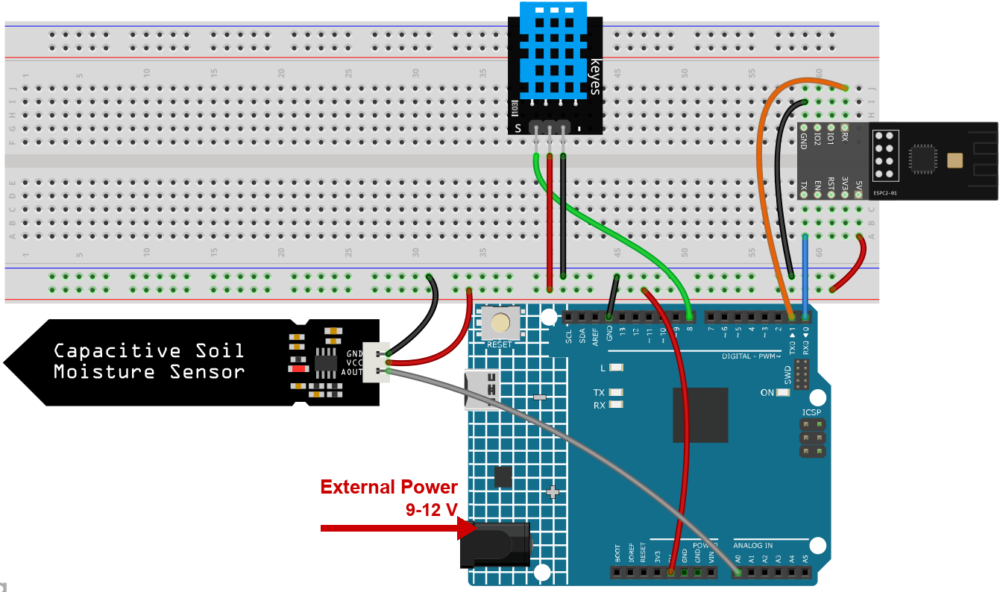
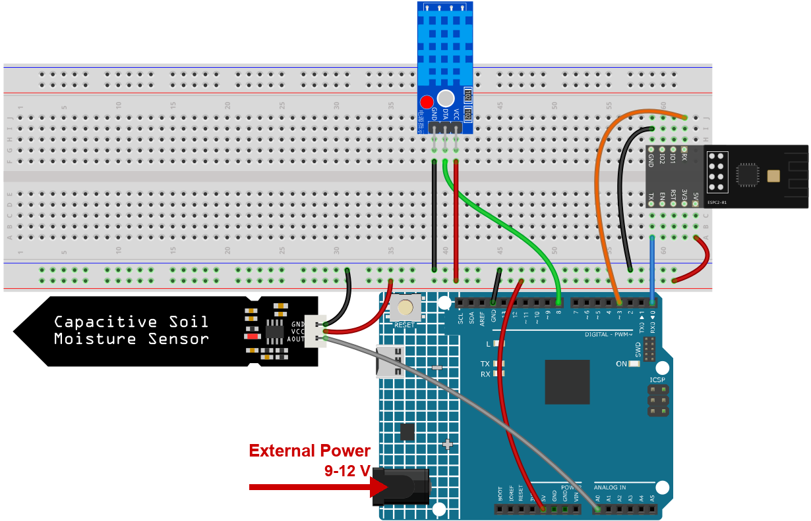
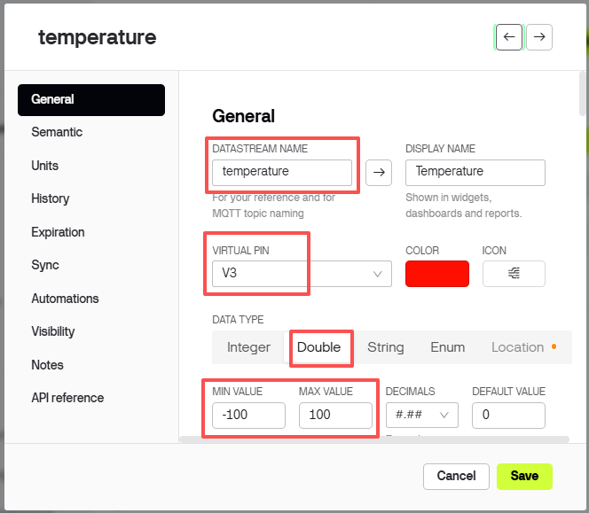
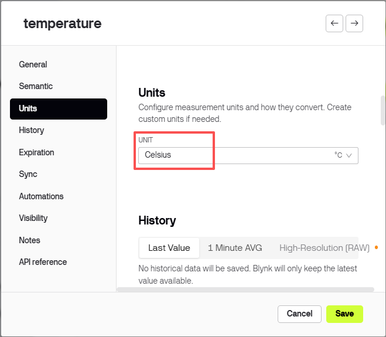
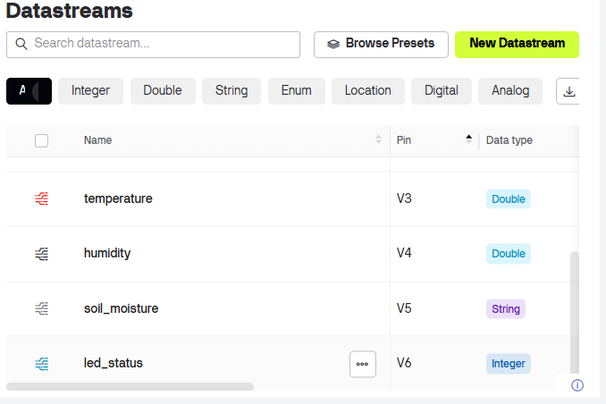
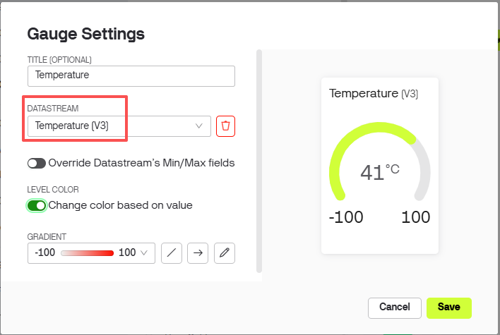
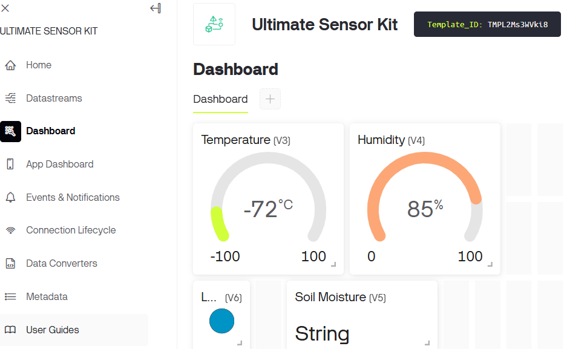
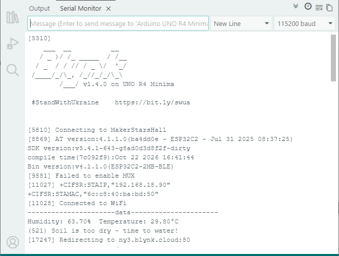
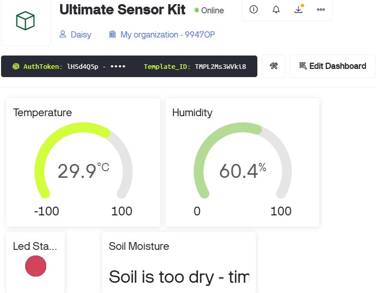

Note
Hello, welcome to the SunFounder Raspberry Pi & Arduino & ESP32 Enthusiasts Community on Facebook! Dive deeper into Raspberry Pi, Arduino, and ESP32 with fellow enthusiasts.
Why Join?
Expert Support: Solve post-sale issues and technical challenges with help from our community and team.
Learn & Share: Exchange tips and tutorials to enhance your skills.
Exclusive Previews: Get early access to new product announcements and sneak peeks.
Special Discounts: Enjoy exclusive discounts on our newest products.
Festive Promotions and Giveaways: Take part in giveaways and holiday promotions.
👉 Ready to explore and create with us? Click [here] and join today!
3. Plant Monitor with Blynk
This project creates a plant monitoring demo system that detects the current temperature, humidity, light intensity, and soil moisture. The data is then displayed on Blynk along with suggestions based on the soil moisture levels.
1. Build the Circuit
Note
The module draws a high current at start-up, so make sure the 9 V battery or an external power supply is plugged into the DC jack of the R4 Minima.
The kit may contain different versions of the DHT11 module. Please confirm the wiring method according to the module you have.




2. Configure Blynk
Note
The template and the device were created once in Get Started with Blynk. Every project adds its datastreams to that same template, so each project occupies its own range of virtual pins. This project uses V3 to V6.
What this project sends to the cloud
Four values, and the type of each one matters - it decides how Blynk can display it:
temperature- a decimal number, so Double.humidity- a decimal number, so Double.soil_moisture- a word such asdry/wet, so String.led_status- brightness 0..255 for the lamp on the dashboard, so Integer. The sketch always sends 255 and only the colour changes.
Add the datastreams
Open Developer Zone -> My Templates, click Ultimate Sensor Kit.

Click Edit to open the template.

Click Datastreams, then Create New.

Create the first datastream:
DATASTREAM NAME:
temperatureDISPLAY NAME:
TemperatureVIRTUAL PIN:
V3DATA TYPE: Integer
MIN
-100, MAX100

Set the UNITS field to
Celsius.
Create the other three datastreams the same way, with these values:
Pin
Name
Type
Min / Max
Units
V4
humidityDouble
0 / 100
Percent
V5
soil_moistureString
V6
led_statusInteger
0 / 255



Add the web dashboard
Click Dashboard, then Add Widget.

Drag a Gauge widget onto the dashboard.

Click the three dots in the corner of the Gauge and choose Settings.
Set Datastream to
Temperature (V3).

Drag the other widgets onto the dashboard the same way - one more Gauge, one Label and one LED - then bind them:
Widget
Datastream
What it shows
Gauge
Humidity (V4)how damp the air is
Label
Soil Moisture (V5)dryorwetLED
Led Status (V6)a status lamp on the dashboard: green when the soil is fine, red when it is not

Note
The LED widget is a lamp on the dashboard. The sketch always writes
255for full brightness and only changes the colour: green when the soil moisture is in the right range, red when it is too wet or too dry. So you can read the state of the plant from across the room.Click Save.


3. Run the Code
Open the
03-Plant_monitor.inofile under the path ofultimate-sensor-kit\code\iot_project_espc201\wifi\03-Plant_monitor, or copy this code into Arduino IDE.The three Blynk lines were copied in Get Started with Blynk. Every project of this kit uses the same device, so they never have to be changed - only the Wi-Fi settings below are project specific.
#define BLYNK_TEMPLATE_ID "TMPLxxxxxx" #define BLYNK_TEMPLATE_NAME "Ultimate Sensor Kit" #define BLYNK_AUTH_TOKEN "YourAuthToken"
You also need to enter the
ssidandpasswordof the WiFi you are using.char ssid[] = "your_ssid"; char pass[] = "your_password";
After selecting the correct board and port, click the Upload button.
Open the Serial monitor(set baudrate to 115200) and wait for a prompt such as a successful connection to appear.

You will also see the same values on the Blynk dashboard.



4. Code explanation
Blynk account and libraries
The first three lines say which Blynk device this board belongs to. They come from the device page and are identical in every project of this kit.
#define BLYNK_TEMPLATE_ID "TMPL2Ms3WVki8" #define BLYNK_TEMPLATE_NAME "Ultimate Sensor Kit" #define BLYNK_AUTH_TOKEN "lHSd4Q5pXP7YKUovVfPZYZqC0UHVORY6" #define BLYNK_PRINT Serial // show Blynk's own log on the Serial Monitor #include <ESP8266_Lib.h> // sends the AT commands #include <BlynkSimpleShieldEsp8266.h> // Blynk on top of them
The serial port that talks to the module
The ESPC2-01 works as a modem: the sketch sends it AT commands. On the R4 it is wired to D0/D1, which is
Serial1, a hardware port, so 115200 works without bit errors.#define EspSerial Serial1 #define ESP8266_BAUD 115200 ESP8266 wifi(&EspSerial);
The function
espModuleInit()waits for the module to finish booting and then sendsATE0to switch the echo off. Without it the module’s start-up log and the echoed commands end up mixed with the replies, and Blynk cannot read them.The DHT11 sensor
#include <DHT.h> #define DHTPIN 8 #define DHTTYPE DHT11 DHT dht(DHTPIN, DHTTYPE); float temperature; float humidity;
A DHT11 returns whole degrees and whole percent, so a
floatis more precision than the sensor really has - but it keeps the code simple and the same for a DHT22 later.The soil moisture sensor and the two thresholds
#define wetSoil 320 #define drySoil 400 const int moistureSensorPin = A0; int moisture; String soilStatus;
The probe returns an analogue value between 0 and 1023, and the wetter the soil, the lower the number. That is why the sketch says “below
wetSoil= too wet”.Note
Measure the two numbers yourself. Push the probe into a glass of water and read the value: that is roughly your
wetSoil. Then read it in dry soil: that isdrySoil. The defaults 320 / 400 only fit the soil of the developer.setup()
void setup() { Serial.begin(115200); EspSerial.begin(ESP8266_BAUD); delay(10); espModuleInit(); Blynk.config(wifi, BLYNK_AUTH_TOKEN); Blynk.connectWiFi(ssid, pass); timer.setInterval(5000L, myTimerEvent); dht.begin(); }
timer.setInterval(5000L, myTimerEvent)measures once every five seconds. A DHT11 cannot do better than one reading per second anyway, and plants do not change faster than that.loop()
void loop() { Blynk.run(); timer.run(); }
Blynk.run()keeps the connection alive,timer.run()fires the measurement. Nothing here may block, or the cloud drops the device.sendData() - measure, judge, report
void sendData() { humidity = dht.readHumidity(); temperature = dht.readTemperature(); if (isnan(humidity) || isnan(temperature)) { Serial.println(F("Failed to read from DHT sensor!")); return; // skip this round } moisture = analogRead(moistureSensorPin); String color; if (moisture < wetSoil) { soilStatus = "Soil is too wet"; color = "#D3435C"; } else if (moisture >= wetSoil && moisture < drySoil) { soilStatus = "Soil moisture is perfect"; color = "#00FF00"; } else { soilStatus = "Soil is too dry - time to water!"; color = "#D3435C"; } Blynk.virtualWrite(V3, temperature); Blynk.virtualWrite(V4, humidity); Blynk.virtualWrite(V5, soilStatus); Blynk.virtualWrite(V6, 255); Blynk.setProperty(V6, "color", color); }
returnon a failed DHT reading leaves the dashboard showing the last good value instead of overwriting it withnan.Blynk.virtualWrite(V3, ...)and friends push the four values to the datastreams.Blynk.virtualWrite(V6, 255)turns the LED widget on the dashboard fully on;Blynk.setProperty(V6, "color", color)then paints it green or red. The real LED marked L on the board is not used by this project.
printData()
void printData() { Serial.print(F("Humidity: ")); Serial.print(humidity); Serial.print(F("% Temperature: ")); Serial.print(temperature); Serial.println(F("°C ")); Serial.print("("); Serial.print(moisture); Serial.print(") "); Serial.println(soilStatus); }
The same numbers, but on the Serial Monitor. When something looks wrong on the phone, this is where you check whether the sensor or the cloud is to blame.